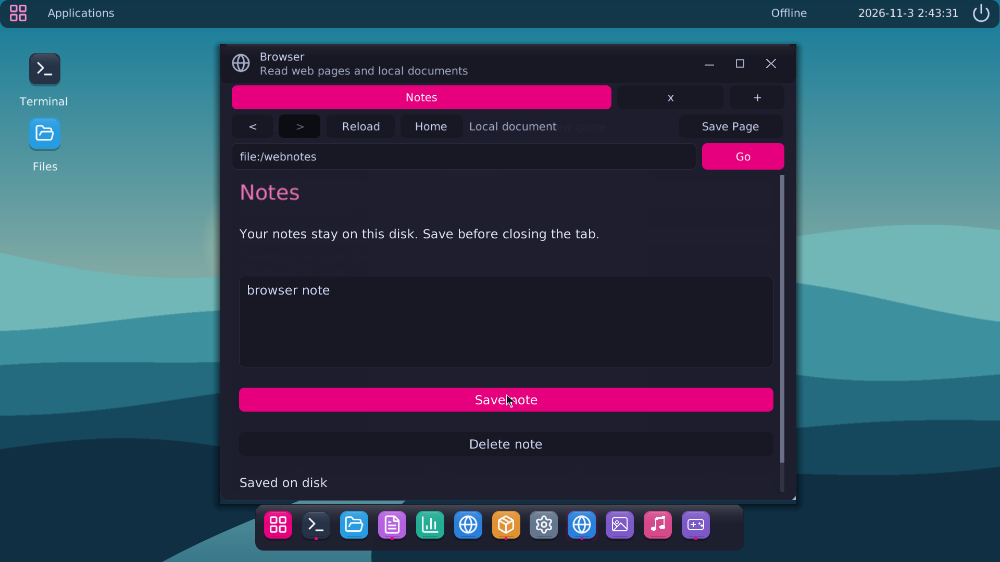

Everything within reach
A searchable launcher, a dock, movable windows and a desktop that scales with your display. Choose a palette, accent and wallpaper, then save it to disk.
Explore the desktop →AN INDEPENDENT OPERATING SYSTEM
Meet Magenta, a desktop built on Avalanche Kernel. Open your files, write a little code, play a game, and make something your own.
x86-64 · BIOS & UEFI · C & assembly

YOUR DESKTOP, YOUR WAY
A searchable launcher, a dock, movable windows and a desktop that scales with your display. Choose a palette, accent and wallpaper, then save it to disk.
Explore the desktop →Files, Terminal, Text editor, System Monitor, Network, Packages, Browser, Images and Music. Browse folders, edit documents and manage your applications.
Meet the applications →Clear a minefield or chase your next high score in 2048. Games includes keyboard and on-screen controls, with your best scores saved on disk.
Controls and shortcuts →AVALANCHE KERNEL
Avalanche handles paging, processes, storage, USB input, audio and networking. Magenta brings those pieces together as a desktop.
Hardware and boot →NETSURF ON MAGENTA
Read web pages with NetSurf’s HTML, CSS and JavaScript engines, TrueType text and HTTPS certificate validation.
BUILD SOMETHING THAT BELONGS HERE
The SDK includes C headers, a runtime, a linker script, an example app and build tools. Create a native executable, sign it with your own key and install it through Packages.
mgnta init hello
mgnta build hello
sign hello/build/hello.mgnta \
--key keys/private.pem \
--certificate keys/certificate.pem \
--out signedPICK YOUR STARTING POINT